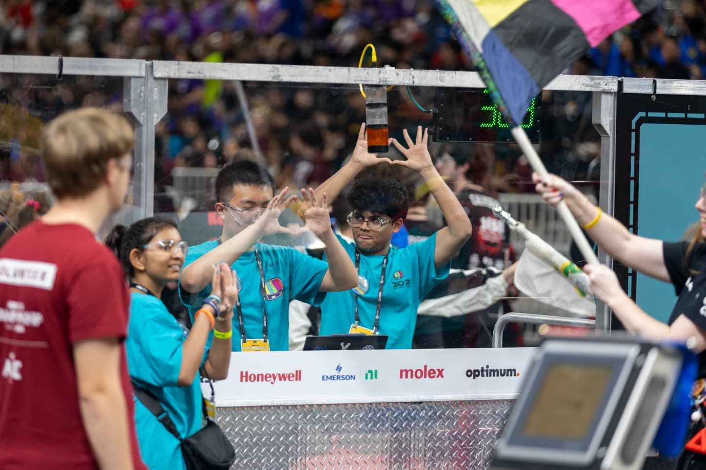

MY ENGINEERING JOURNEY
Before CodeBench was an idea, I was simply a student who loved building robots but had no idea where to begin. This is the story that inspired CodeBench.
Begin the Journey ↓It all started during the winter of 7th grade when I received my very first robot building kit. I opened the box expecting to immediately build a robot, but instead I found dozens of unfamiliar wires, sensors, motors, and electronic components. Even the instruction book felt overwhelming.
Instead of giving up, I kept building one piece at a time. A few days later, I proudly showed my parents the very first robot I had ever built.
Soon after, I joined a robotics club where I built another robot and learned the basics of programming in C. I competed in the Middle School Technical Design Challenge (MSTDC), where my robot successfully completed an infinity-shaped line tracing course.
I earned 2nd Place—and that was the moment I realized engineering was something I truly wanted to pursue.
The next competition introduced Balloon Jousting, and everything was different. My robot didn't perform the way I had hoped, finishing 6th out of 10 teams. At first, it felt disappointing.
Looking back, it became one of the most valuable lessons I ever learned: engineering isn't about never failing. It's about learning from every failure and building something better the next time.

I joined FRC Team 303 expecting to finally understand everything about robotics, but I felt overwhelmed all over again. I was surrounded by incredible upperclassmen building a massive competition robot, while many of us freshmen struggled to figure out where we fit in.
Eventually, I earned a position on the drive team as Human Player and competed at the FIRST Championship. Standing on that field was unforgettable, but I realized something crucial: I knew how to do my role, but I didn't fully understand the engineering behind it.
One conversation changed everything. I realized that beginners aren't unmotivated—they simply don't know where to start.
That realization inspired me to create CodeBench: a place where students can learn engineering, build projects, ask questions, and never feel lost when taking their first steps.
Start Your Journey